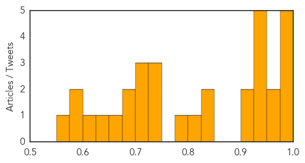
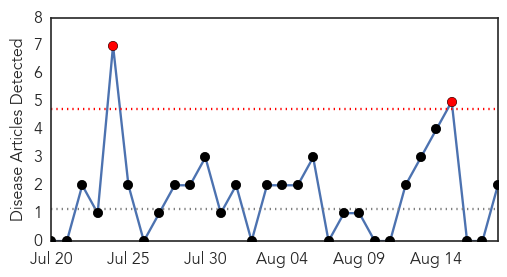
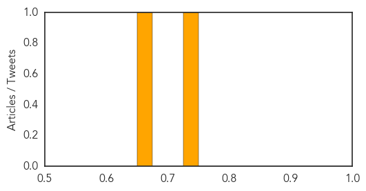

Cholera
30-Day Web Trend
1 alerts, 3 warnings

30-Day Twitter Trend
7 alerts, 0 warnings

Article Locations

Article Confidences
Top Articles:
- 0.995
- Gov't squeezes cash from Ebola fund to fight Cholera
- 0.987
- Cholera reaches staggering levels
- 0.985
- Kingdom of Saudi Arabia supports WHO response to Iraq crisis [EN/AR] - Iraq
- 0.985
- Nepal floods, landslide death toll climbs to 101; cholera outbreak feared
- 0.982
- Viral Fever Sweeps Through Villages in Nalgonda Dist
- 0.971
- Nepal floods kill 101, cholera fears mount
- 0.967
- Nepal floods kill 101 as cholera fears mount - Regional
- 0.948
- Nepal floods death toll climbs to 101
- 0.947
- Nepal floods death toll climbs to 101
- 0.927
- Nepal: Race to reach thousands trapped by floods
- 0.926
- Farsnews
- 0.925
- Floods kill nearly 200 in Nepal, India - Authorities battle against cholera outbreak - Kuwait Times
- 0.911
- Nepal, India floods kill nearly 200
- 0.910
- Nepal, India Floods Kill nearly 200 — Naharnet
- 0.843
- Nepal, India floods leave nearly 200 dead, scores missing
- 0.836
- Scores dead in devastating #Nepal floods
- 0.804
- Nepal Flood Death Toll Climbs To 101, Cholera Outbreak Feared
- 0.796
- 105 Killed in Nepal Floods, Fears of Disease Rise
- 0.746
- Nepal Floods Death Toll Passes 100
- 0.739
- Africa goes medieval in its fight against Ebola
- 0.732
- Fears of cholera outbreak in Nepal
- 0.723
- Nepal Floods Death Toll Passes 100
- 0.723
- Nepal Floods Death Toll Passes 100
- 0.723
- Nepal Floods Death Toll Passes 100
- 0.695
- Nepal floods kill at least 89 as cholera fears rise
- 0.676
- 105 killed in Nepal floods, fears of disease rise
- 0.661
- Africa goes medieval in its Ebola fight - Stephen Mihm
- 0.642
- Flooding in northern India and Nepal kills at least 160
- 0.613
- South Sudan Crisis: What is happening in South Sudan? - South Sudan
- 0.580
- Nepal flood toll hits 101, fears of disease rise
- 0.580
- Nepal flood toll hits 101, fears of disease rise
- 0.565
- Disease Outbreak Feared In Flood-Affected Areas Of Nepal And India As Death Toll Rises
Top Tweets:
-
No tweets found for Aug 18, 2014
Meningitis
30-Day Web Trend
2 alerts, 0 warnings

30-Day Twitter Trend
1 alerts, 0 warnings

Article Locations

Article Confidences
Top Articles:
Top Tweets:
-
No tweets found for Aug 18, 2014